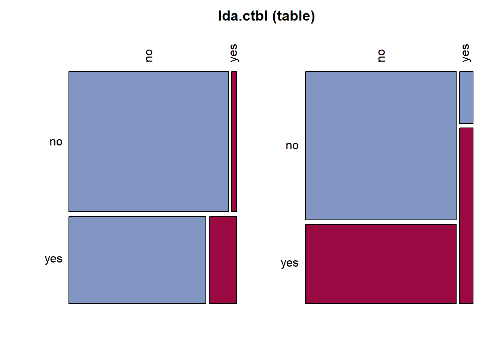
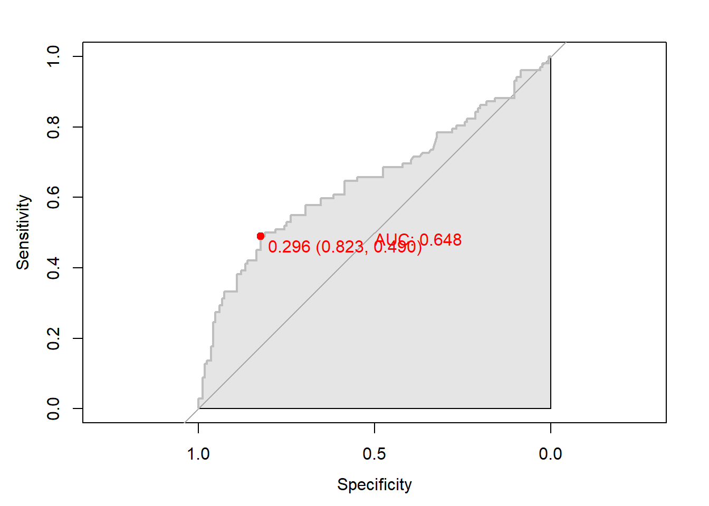

pacman::p_load("data.table",
"tidyverse",
"dplyr", "tidyr",
"caret",
"ggplot2", "GGally",
"biotools", # For boxM
"MASS", # For lda and qda
"DescTools", # For Desc
"klaR" # For partimat
)
titanic <- fread("../Titanic.csv") # 데이터 불러오기
titanic %>%
as_tibble7 Discriminant Analysis
Discriminant Analysis의 장점
- 고차원의 데이터셋을 관리가 훨씬 쉬운 저차원으로 축소하여 예측을 수행한다.
- 차원축소를 통해 얻은 판별점수는 다른 분류 예측 알고리듬의 예측 변수로 활용 가능하다.
- 정규성을 만족할 경우, 로지스틱 회귀분석보다 더 효과적이다.
- 30% 정도 더 효과적인 성능을 발휘한다.
- 데이터셋의 크기가 작을 때 유용하게 적용할 수 있다.
Discriminant Analysis의 단점
- 연속형 예측 변수만 가능하다.
실습 자료 : 1912년 4월 15일 타이타닉호 침몰 당시 탑승객들의 정보를 기록한 데이터셋이며, 총 11개의 변수를 포함하고 있다. 이 자료에서 Target은
Survived이다.


7.1 데이터 불러오기
# A tibble: 891 × 11
Survived Pclass Name Sex Age SibSp Parch Ticket Fare Cabin Embarked
<int> <int> <chr> <chr> <dbl> <int> <int> <chr> <dbl> <chr> <chr>
1 0 3 Braund, Mr. Owen Harris male 22 1 0 A/5 21171 7.25 "" S
2 1 1 Cumings, Mrs. John Bradley (Florence Briggs Thayer) female 38 1 0 PC 17599 71.3 "C85" C
3 1 3 Heikkinen, Miss. Laina female 26 0 0 STON/O2. 3101282 7.92 "" S
4 1 1 Futrelle, Mrs. Jacques Heath (Lily May Peel) female 35 1 0 113803 53.1 "C123" S
5 0 3 Allen, Mr. William Henry male 35 0 0 373450 8.05 "" S
6 0 3 Moran, Mr. James male NA 0 0 330877 8.46 "" Q
7 0 1 McCarthy, Mr. Timothy J male 54 0 0 17463 51.9 "E46" S
8 0 3 Palsson, Master. Gosta Leonard male 2 3 1 349909 21.1 "" S
9 1 3 Johnson, Mrs. Oscar W (Elisabeth Vilhelmina Berg) female 27 0 2 347742 11.1 "" S
10 1 2 Nasser, Mrs. Nicholas (Adele Achem) female 14 1 0 237736 30.1 "" C
# ℹ 881 more rows7.2 데이터 전처리 I
titanic %<>%
data.frame() %>% # Data Frame 형태로 변환
mutate(Survived = ifelse(Survived == 1, "yes", "no")) # Target을 문자형 변수로 변환
# 1. Convert to Factor
titanic$Survived <- factor(titanic$Survived) # Target을 범주형으로 변환
# 2. Generate New Variable
titanic <- titanic %>%
mutate(FamSize = SibSp + Parch) # "FamSize = 형제 및 배우자 수 + 부모님 및 자녀 수"로 가족 수를 의미하는 새로운 변수
glimpse(titanic) # 데이터 구조 확인Rows: 891
Columns: 12
$ Survived <fct> no, yes, yes, yes, no, no, no, no, yes, yes, yes, yes, no, no, no, yes, no, yes, no, yes, no, yes, yes, yes, no, yes, no, no, yes, no, no, yes, yes, no, no, no, yes, no, no, yes, no…
$ Pclass <int> 3, 1, 3, 1, 3, 3, 1, 3, 3, 2, 3, 1, 3, 3, 3, 2, 3, 2, 3, 3, 2, 2, 3, 1, 3, 3, 3, 1, 3, 3, 1, 1, 3, 2, 1, 1, 3, 3, 3, 3, 3, 2, 3, 2, 3, 3, 3, 3, 3, 3, 3, 3, 1, 2, 1, 1, 2, 3, 2, 3, 3…
$ Name <chr> "Braund, Mr. Owen Harris", "Cumings, Mrs. John Bradley (Florence Briggs Thayer)", "Heikkinen, Miss. Laina", "Futrelle, Mrs. Jacques Heath (Lily May Peel)", "Allen, Mr. William Henry…
$ Sex <chr> "male", "female", "female", "female", "male", "male", "male", "male", "female", "female", "female", "female", "male", "male", "female", "female", "male", "male", "female", "female",…
$ Age <dbl> 22.0, 38.0, 26.0, 35.0, 35.0, NA, 54.0, 2.0, 27.0, 14.0, 4.0, 58.0, 20.0, 39.0, 14.0, 55.0, 2.0, NA, 31.0, NA, 35.0, 34.0, 15.0, 28.0, 8.0, 38.0, NA, 19.0, NA, NA, 40.0, NA, NA, 66.…
$ SibSp <int> 1, 1, 0, 1, 0, 0, 0, 3, 0, 1, 1, 0, 0, 1, 0, 0, 4, 0, 1, 0, 0, 0, 0, 0, 3, 1, 0, 3, 0, 0, 0, 1, 0, 0, 1, 1, 0, 0, 2, 1, 1, 1, 0, 1, 0, 0, 1, 0, 2, 1, 4, 0, 1, 1, 0, 0, 0, 0, 1, 5, 0…
$ Parch <int> 0, 0, 0, 0, 0, 0, 0, 1, 2, 0, 1, 0, 0, 5, 0, 0, 1, 0, 0, 0, 0, 0, 0, 0, 1, 5, 0, 2, 0, 0, 0, 0, 0, 0, 0, 0, 0, 0, 0, 0, 0, 0, 0, 2, 0, 0, 0, 0, 0, 0, 1, 0, 0, 0, 1, 0, 0, 0, 2, 2, 0…
$ Ticket <chr> "A/5 21171", "PC 17599", "STON/O2. 3101282", "113803", "373450", "330877", "17463", "349909", "347742", "237736", "PP 9549", "113783", "A/5. 2151", "347082", "350406", "248706", "38…
$ Fare <dbl> 7.2500, 71.2833, 7.9250, 53.1000, 8.0500, 8.4583, 51.8625, 21.0750, 11.1333, 30.0708, 16.7000, 26.5500, 8.0500, 31.2750, 7.8542, 16.0000, 29.1250, 13.0000, 18.0000, 7.2250, 26.0000,…
$ Cabin <chr> "", "C85", "", "C123", "", "", "E46", "", "", "", "G6", "C103", "", "", "", "", "", "", "", "", "", "D56", "", "A6", "", "", "", "C23 C25 C27", "", "", "", "B78", "", "", "", "", ""…
$ Embarked <chr> "S", "C", "S", "S", "S", "Q", "S", "S", "S", "C", "S", "S", "S", "S", "S", "S", "Q", "S", "S", "C", "S", "S", "Q", "S", "S", "S", "C", "S", "Q", "S", "C", "C", "Q", "S", "C", "S", "…
$ FamSize <int> 1, 1, 0, 1, 0, 0, 0, 4, 2, 1, 2, 0, 0, 6, 0, 0, 5, 0, 1, 0, 0, 0, 0, 0, 4, 6, 0, 5, 0, 0, 0, 1, 0, 0, 1, 1, 0, 0, 2, 1, 1, 1, 0, 3, 0, 0, 1, 0, 2, 1, 5, 0, 1, 1, 1, 0, 0, 0, 3, 7, 0…# 3. Select Variables used for Analysis
titanic1 <- titanic %>%
dplyr::select(Survived, Age, Fare, FamSize) # 분석에 사용할 변수 선택 -> 판별분석에서 예측 변수들은 다변량 정규분포를 가정하기 때문에 범주형 예측 변수는 제거
glimpse(titanic1) # 데이터 구조 확인Rows: 891
Columns: 4
$ Survived <fct> no, yes, yes, yes, no, no, no, no, yes, yes, yes, yes, no, no, no, yes, no, yes, no, yes, no, yes, yes, yes, no, yes, no, no, yes, no, no, yes, yes, no, no, no, yes, no, no, yes, no…
$ Age <dbl> 22.0, 38.0, 26.0, 35.0, 35.0, NA, 54.0, 2.0, 27.0, 14.0, 4.0, 58.0, 20.0, 39.0, 14.0, 55.0, 2.0, NA, 31.0, NA, 35.0, 34.0, 15.0, 28.0, 8.0, 38.0, NA, 19.0, NA, NA, 40.0, NA, NA, 66.…
$ Fare <dbl> 7.2500, 71.2833, 7.9250, 53.1000, 8.0500, 8.4583, 51.8625, 21.0750, 11.1333, 30.0708, 16.7000, 26.5500, 8.0500, 31.2750, 7.8542, 16.0000, 29.1250, 13.0000, 18.0000, 7.2250, 26.0000,…
$ FamSize <int> 1, 1, 0, 1, 0, 0, 0, 4, 2, 1, 2, 0, 0, 6, 0, 0, 5, 0, 1, 0, 0, 0, 0, 0, 4, 6, 0, 5, 0, 0, 0, 1, 0, 0, 1, 1, 0, 0, 2, 1, 1, 1, 0, 3, 0, 0, 1, 0, 2, 1, 5, 0, 1, 1, 1, 0, 0, 0, 3, 7, 0…7.3 데이터 탐색
ggpairs(titanic1,
aes(colour = Survived)) + # Target의 범주에 따라 색깔을 다르게 표현
theme_bw()ggpairs(titanic1,
aes(colour = Survived, alpha = 0.8)) + # Target의 범주에 따라 색깔을 다르게 표현
scale_colour_manual(values = c("purple", "cyan4")) + # 특정 색깔 지정
scale_fill_manual(values = c("purple", "cyan4")) + # 특정 색깔 지정
theme_bw()7.4 데이터 분할
# Partition (Training Dataset : Test Dataset = 7:3)
y <- titanic1$Survived # Target
set.seed(200)
ind <- createDataPartition(y, p = 0.7, list =T) # Index를 이용하여 7:3으로 분할
titanic.trd <- titanic1[ind$Resample1,] # Training Dataset
titanic.ted <- titanic1[-ind$Resample1,] # Test Dataset7.5 데이터 전처리 II
# 1. Imputation
titanic.trd.Imp <- titanic.trd %>%
mutate(Age = replace_na(Age, mean(Age, na.rm = TRUE))) # 평균으로 결측값 대체
titanic.ted.Imp <- titanic.ted %>%
mutate(Age = replace_na(Age, mean(titanic.trd$Age, na.rm = TRUE))) # Training Dataset을 이용하여 결측값 대체
# 2. Standardization
preProcValues <- preProcess(titanic.trd.Imp,
method = c("center", "scale")) # Standardization 정의 -> Training Dataset에 대한 평균과 표준편차 계산
titanic.trd.Imp <- predict(preProcValues, titanic.trd.Imp) # Standardization for Training Dataset
titanic.ted.Imp <- predict(preProcValues, titanic.ted.Imp) # Standardization for Test Dataset
glimpse(titanic.trd.Imp) # 데이터 구조 확인Rows: 625
Columns: 4
$ Survived <fct> no, yes, yes, no, no, no, yes, yes, yes, yes, no, no, yes, no, yes, no, yes, no, no, no, yes, no, no, yes, yes, no, no, no, no, no, yes, no, no, no, yes, no, yes, no, no, no, yes, n…
$ Age <dbl> -0.61306970, -0.30411628, 0.39102893, 0.39102893, 0.00000000, -2.15783684, -0.22687792, -1.23097656, -2.00336012, 2.16751113, 0.69998236, -1.23097656, 0.00000000, 0.08207551, 0.0000…
$ Fare <dbl> -0.51776394, -0.50463325, 0.37414970, -0.50220165, -0.49425904, -0.24882814, -0.44222264, -0.07383411, -0.33393441, -0.14232374, -0.05040897, -0.50601052, -0.40590999, -0.30864569, …
$ FamSize <dbl> 0.04506631, -0.55421976, 0.04506631, -0.55421976, -0.55421976, 1.84292454, 0.64435239, 0.04506631, 0.64435239, -0.55421976, 3.04149669, -0.55421976, -0.55421976, 0.04506631, -0.5542…glimpse(titanic.ted.Imp) # 데이터 구조 확인Rows: 266
Columns: 4
$ Survived <fct> yes, no, no, yes, no, yes, yes, yes, yes, yes, no, no, yes, yes, no, yes, no, yes, yes, no, yes, no, no, no, no, no, no, yes, yes, no, no, no, no, no, no, no, no, no, no, yes, no, n…
$ Age <dbl> 0.62274400, 1.85855771, -0.76754642, 1.93579607, -2.15783684, 0.31379058, -1.15373820, 0.62274400, 0.00000000, -2.08059848, 0.00000000, -0.69030806, -0.07240121, -0.69030806, -0.111…
$ Fare <dbl> 0.727866891, 0.350076786, -0.502201647, -0.347551409, -0.092232621, -0.405909990, -0.502606266, -0.048220525, -0.518168555, 0.150037190, -0.502201647, -0.507064862, -0.153022808, -0…
$ FamSize <dbl> 0.04506631, -0.55421976, -0.55421976, -0.55421976, 2.44221062, -0.55421976, -0.55421976, 3.04149669, -0.55421976, 1.24363847, -0.55421976, -0.55421976, 0.04506631, -0.55421976, -0.5…7.6 모공분산행렬의 동일성 검정
titanic.boxM <- boxM(titanic.trd.Imp[,-1], # Training Dataset including Only 예측 변수 -> Target 제외
titanic.trd.Imp$Survived) # Target
titanic.boxM
Box's M-test for Homogeneity of Covariance Matrices
data: titanic.trd.Imp[, -1]
Chi-Sq (approx.) = 269.33, df = 6, p-value < 2.2e-16Caution! Package "biotools"에서 제공하는 함수 boxM()를 이용하여 모공분산행렬의 동일성 검정을 수행할 수 있다. 해당 검정에서 귀무가설 \(H_0\)은 “Target의 모든 클래스의 모공분산행렬은 동일하다.”이며, 귀무가설 \(H_0\)을 기각할 증거가 부족할 경우 원칙적으로는 선형판별분석을 수행한다.
Result! 가설 \(H_0 :\Sigma_{\text{yes}}=\Sigma_{\text{no}}\) vs \(H_1 :\Sigma_{\text{yes}}\ne\Sigma_{\text{no}}\)에 대하여, 카이제곱 검정통계량 \(\chi^2\)값은 269.33이며 \(p\)값은 거의 0값에 가깝다. 이에 근거하여, 유의수준 5%에서 \(p\)값이 0.05보다 작기 때문에 귀무가설 \(H_0\)를 기각할 수 있다. 즉, Training Dataset에서 Target “Survived”의 두 클래스 “no”와 “yes”의 모공분산행렬은 동일하지 않다.
7.7 선형판별분석(LDA)
7.7.1 모형 훈련
Caution! Package "MASS"에서 제공하는 함수 lda()를 통해 선형판별함수 \(L(x)\)를 얻을 수 있다. 함수 lda()는 예측 변수의 평균을 0으로 변환(중심화)한 후 분석을 수행하며, 정규화된 판별계수벡터 \(\boldsymbol{b}\)를 계산한다. 여기서, 정규화된 판별계수벡터란 합동공분산행렬을 \(\boldsymbol{S}\)라 할 때 \(\boldsymbol{b}^T \boldsymbol{S}\boldsymbol{b}=1\)을 만족하는 \(\boldsymbol{b}\)를 의미한다.
titanic.lda <- lda(Survived ~ .,
# prior = c(1/2, 1/2), # 사전확률
data = titanic.trd.Imp)
titanic.ldaCall:
lda(Survived ~ ., data = titanic.trd.Imp)
Prior probabilities of groups:
no yes
0.616 0.384
Group means:
Age Fare FamSize
no 0.06357863 -0.2127082 0.006151633
yes -0.10199071 0.3412194 -0.009868244
Coefficients of linear discriminants:
LD1
Age -0.4537583
Fare 1.0472308
FamSize -0.3515745Caution! “Prior probabilities of groups”는 Target의 각 클래스에 대한 사전확률을 의미하며, 함수 lda()의 옵션 prior을 이용하여 직접 지정할 수 있다. 옵션을 따로 지정해주지 않으면, Training Dataset에서 Target의 클래스 비율을 사전확률로 사용한다.
“Group means”는 Target의 클래스별 예측 변수들의 평균을 의미한다.
“Coefficients of linear discriminants”는 선형판별함수의 정규화된 판별계수벡터를 의미한다.
Result! Training Dataset “titanic.trd.Imp”에서 Target “Survived”의 클래스별 비율은 각각 “no” 61.6%, “yes” 38.4%이다. “Coefficients of linear discriminants”에 출력된 결과를 이용하여 선형판별함수 \(L(x)\)를 다음과 같이 얻을 수 있다.
\[ \begin{align*} L(x) = &\; -0.454Z_{\text{Age}}+1.047 Z_{\text{Fare}} -0.352 Z_{\text{FamSize}} \end{align*} \] 여기서, \(Z_{\text{예측 변수}}\)는 표준화한 예측 변수를 의미한다. 판별계수의 부호를 이용하여 해석해보면, 판별계수가 양수인 예측 변수 “Fare”의 값이 클수록 선형판별함수 \(L(x)\)의 값이 커지며, 이는 탑승객이 생존할 가능성(Target “Survived = yes”일 확률)이 커진다는 것을 의미한다.
# Target "Survived" 클래스별 판별점수 히스토그램
plot(titanic.lda, dimen = 1, type = "b")Result! 각 case에 대하여 예측 변수들의 관측값을 위에서 구한 선형판별함수 \(L(x)\)에 대입하여 얻은 값을 “판별점수”라고 한다. Training Dataset의 Target “Survived”의 클래스별 판별점수 히스토그램을 살펴보면, “no”에 속하는 case의 판별점수는 대체로 0보다 작은 음수값이고 “yes”에 속하는 case의 판별점수는 대체로 0보다 큰 양수값이다.
# 두 예측 변수 "Age"와 "Fare"에 대해 선형판별분석에 기초한 관측값의 분류 결과
partimat(Survived ~ Age + Fare,
data = titanic.trd.Imp,
method = "lda")Result! 빨간색은 잘못 분류된 case를 의미하며, 직선형태로 분류 영역이 나뉘어져 있다는 것을 알 수 있다.
7.7.2 모형 평가
Caution! 모형 평가를 위해 Test Dataset에 대한 예측 class/확률이 필요하며, 함수 predict()를 이용하여 생성한다.
# 예측 class와 예측 확률 생성
titanic.lda.pred <- predict(titanic.lda,
newdata = titanic.ted.Imp[,-1]) # Test Dataset including Only 예측 변수
titanic.lda.pred %>%
as_tibble# A tibble: 266 × 3
class posterior[,"no"] [,"yes"] x[,"LD1"]
<fct> <dbl> <dbl> <dbl>
1 no 0.554 0.446 0.464
2 no 0.670 0.330 -0.282
3 no 0.625 0.375 0.0172
4 no 0.771 0.229 -1.05
5 no 0.624 0.376 0.0239
6 no 0.683 0.317 -0.373
7 no 0.598 0.402 0.192
8 no 0.810 0.190 -1.40
9 no 0.680 0.320 -0.348
10 no 0.521 0.479 0.664
# ℹ 256 more rowsResult! 함수 predict()는 3개의 결과를 리스트로 반환한다.
class: 예측 classposterior: 각 클래스에 대한 예측 확률(사후 확률)x: 판별점수
7.7.2.1 ConfusionMatrix
CM <- caret::confusionMatrix(titanic.lda.pred$class, titanic.ted.Imp$Survived,
positive = "yes") # confusionMatrix(예측 class, 실제 class, positive = "관심 class")
CMConfusion Matrix and Statistics
Reference
Prediction no yes
no 159 85
yes 5 17
Accuracy : 0.6617
95% CI : (0.6014, 0.7183)
No Information Rate : 0.6165
P-Value [Acc > NIR] : 0.07266
Kappa : 0.1599
Mcnemar's Test P-Value : < 2e-16
Sensitivity : 0.16667
Specificity : 0.96951
Pos Pred Value : 0.77273
Neg Pred Value : 0.65164
Prevalence : 0.38346
Detection Rate : 0.06391
Detection Prevalence : 0.08271
Balanced Accuracy : 0.56809
'Positive' Class : yes
7.7.2.2 ROC 곡선
ac <- titanic.ted.Imp$Survived # Test Dataset의 실제 class
pp <- as.numeric(titanic.lda.pred$posterior[,2]) # "Survived = yes"에 대한 예측 확률을 수치형으로 변환7.7.2.2.1 Package “pROC”
pacman::p_load("pROC")
lda.roc <- roc(ac, pp, plot = T, col = "gray") # roc(실제 class, 예측 확률)
auc <- round(auc(lda.roc), 3)
legend("bottomright", legend = auc, bty = "n")Caution! Package "pROC"를 통해 출력한 ROC 곡선은 다양한 함수를 이용해서 그래프를 수정할 수 있다.
# 함수 plot.roc() 이용
plot.roc(lda.roc,
col="gray", # Line Color
print.auc = TRUE, # AUC 출력 여부
print.auc.col = "red", # AUC 글씨 색깔
print.thres = TRUE, # Cutoff Value 출력 여부
print.thres.pch = 19, # Cutoff Value를 표시하는 도형 모양
print.thres.col = "red", # Cutoff Value를 표시하는 도형의 색깔
auc.polygon = TRUE, # 곡선 아래 면적에 대한 여부
auc.polygon.col = "gray90") # 곡선 아래 면적의 색깔# 함수 ggroc() 이용
ggroc(lda.roc) +
annotate(geom = "text", x = 0.9, y = 1.0,
label = paste("AUC = ", auc),
size = 5,
color="red") +
theme_bw()7.7.2.2.2 Package “Epi”
pacman::p_load("Epi")
# install_version("etm", version = "1.1", repos = "http://cran.us.r-project.org")
ROC(pp, ac, plot = "ROC") # ROC(예측 확률, 실제 class) 7.7.2.2.3 Package “ROCR”
pacman::p_load("ROCR")
lda.pred <- prediction(pp, ac) # prediction(예측 확률, 실제 class)
lda.perf <- performance(lda.pred, "tpr", "fpr") # performance(, "민감도", "1-특이도")
plot(lda.perf, col = "gray") # ROC Curve
perf.auc <- performance(lda.pred, "auc") # AUC
auc <- attributes(perf.auc)$y.values
legend("bottomright", legend = auc, bty = "n")7.7.2.3 향상 차트
7.7.2.3.1 Package “ROCR”
lda.pred <- performance(lda.pred, "lift", "rpp") # Lift Chart
plot(lda.pred, main = "lift curve",
colorize = T, # Coloring according to cutoff
lwd = 2) 7.7.2.4 오분류표
# 오분류표
lda.ctbl <- table(titanic.ted.Imp$Survived, # Test Dataset의 실제 class
titanic.lda.pred$class) # 예측 class
lda.ctbl
no yes
no 159 5
yes 85 17Desc(lda.ctbl,
digits = 4)------------------------------------------------------------------------------------------------------------------------------------------------------------------------------------------------------
lda.ctbl (table)
Summary:
n: 266, rows: 2, columns: 2
Pearson's Chi-squared test (cont. adj):
X-squared = 13.629, df = 1, p-value = 0.0002227
Fisher's exact test p-value = 0.0001416
McNemar's chi-squared = 69.344, df = 1, p-value < 2.2e-16
estimate lwr.ci upr.ci'
odds ratio 6.3600 2.2676 17.8382
rel. risk (col1) 1.1634 1.0623 1.2742
rel. risk (col2) 0.1829 0.0696 0.4806
Contingency Coeff. 0.234
Cramer's V 0.240
Kendall Tau-b 0.240
no yes Sum
no freq 159 5 164
perc 59.7744% 1.8797% 61.6541%
p.row 96.9512% 3.0488% .
p.col 65.1639% 22.7273% .
yes freq 85 17 102
perc 31.9549% 6.3910% 38.3459%
p.row 83.3333% 16.6667% .
p.col 34.8361% 77.2727% .
Sum freq 244 22 266
perc 91.7293% 8.2707% 100.0000%
p.row . . .
p.col . . .
----------
' 95% conf. level
Result! Test Dataset에 대해서 Target “Survived”의 “no”에 속하는 164개의 case 중 159개(159/164=97.0%)는 “no”로 제대로 분류되었으나 5개(5/164=3.0%)는 “yes”로 잘못 분류되었다. 또한, Target “Survived”의 “yes”에 속하는 102개의 case 중 17개(17/102=16.7%)는 “yes”로 제대로 분류되었으나 85개(85/102=83.3%)는 “no”로 잘못 분류되었다. 유도된 선형판별함수에 대한 오분류율은 (5+85)/266=33.8%이며, 정확도는 (159+17)/266=66.2%이다.
7.8 이차판별분석(QDA)
7.8.1 모형 훈련
Caution! Package "MASS"에서 제공하는 함수 qda()를 통해 이차판별함수를 얻을 수 있다.
titanic.qda <- qda(Survived ~ .,
# prior = c(1/2, 1/2), # 사전확률
data = titanic.trd.Imp)
titanic.qdaCall:
qda(Survived ~ ., data = titanic.trd.Imp)
Prior probabilities of groups:
no yes
0.616 0.384
Group means:
Age Fare FamSize
no 0.06357863 -0.2127082 0.006151633
yes -0.10199071 0.3412194 -0.009868244Caution! 이차판별분석에서는 판별계수를 출력하지 않는다.
# 두 예측 변수 "Age"와 "Fare"에 대해 이차판별분석에 기초한 관측값의 분류 결과
partimat(Survived ~ Age + Fare,
data = titanic.trd.Imp,
method = "qda")Result! 빨간색은 잘못 분류된 case를 의미한다. 선형판별분석에서 살펴본 그림과 달리 곡선형태로 분류 영역이 나뉘어져 있다는 것을 알 수 있다.
7.8.2 모형 평가
Caution! 모형 평가를 위해 Test Dataset에 대한 예측 class/확률이 필요하며, 함수 predict()를 이용하여 생성한다.
# 예측 class와 예측 확률 생성
titanic.qda.pred <- predict(titanic.qda,
newdata = titanic.ted.Imp[,-1]) # Test Dataset including Only 예측 변수
titanic.qda.pred %>%
as_tibble# A tibble: 266 × 2
class posterior[,"no"] [,"yes"]
<fct> <dbl> <dbl>
1 yes 0.446 0.554
2 no 0.569 0.431
3 no 0.715 0.285
4 no 0.710 0.290
5 no 0.981 0.0186
6 no 0.751 0.249
7 no 0.688 0.312
8 no 1.00 0.0000362
9 no 0.746 0.254
10 no 0.631 0.369
# ℹ 256 more rows7.8.2.1 ConfusionMatrix
CM <- caret::confusionMatrix(titanic.qda.pred$class, titanic.ted.Imp$Survived,
positive = "yes") # confusionMatrix(예측 class, 실제 class, positive = "관심 class")
CMConfusion Matrix and Statistics
Reference
Prediction no yes
no 157 81
yes 7 21
Accuracy : 0.6692
95% CI : (0.6091, 0.7254)
No Information Rate : 0.6165
P-Value [Acc > NIR] : 0.04336
Kappa : 0.1891
Mcnemar's Test P-Value : 7.149e-15
Sensitivity : 0.20588
Specificity : 0.95732
Pos Pred Value : 0.75000
Neg Pred Value : 0.65966
Prevalence : 0.38346
Detection Rate : 0.07895
Detection Prevalence : 0.10526
Balanced Accuracy : 0.58160
'Positive' Class : yes
7.8.2.2 ROC 곡선
ac <- titanic.ted.Imp$Survived # Test Dataset의 실제 class
pp <- as.numeric(titanic.qda.pred$posterior[,2]) # "Survived = yes"에 대한 예측 확률을 수치형으로 변환7.8.2.2.1 Package “pROC”
pacman::p_load("pROC")
qda.roc <- roc(ac, pp, plot = T, col = "gray") # roc(실제 class, 예측 확률)
auc <- round(auc(qda.roc), 3)
legend("bottomright", legend = auc, bty = "n")Caution! Package "pROC"를 통해 출력한 ROC 곡선은 다양한 함수를 이용해서 그래프를 수정할 수 있다.
# 함수 plot.roc() 이용
plot.roc(qda.roc,
col="gray", # Line Color
print.auc = TRUE, # AUC 출력 여부
print.auc.col = "red", # AUC 글씨 색깔
print.thres = TRUE, # Cutoff Value 출력 여부
print.thres.pch = 19, # Cutoff Value를 표시하는 도형 모양
print.thres.col = "red", # Cutoff Value를 표시하는 도형의 색깔
auc.polygon = TRUE, # 곡선 아래 면적에 대한 여부
auc.polygon.col = "gray90") # 곡선 아래 면적의 색깔
# 함수 ggroc() 이용
ggroc(qda.roc) +
annotate(geom = "text", x = 0.9, y = 1.0,
label = paste("AUC = ", auc),
size = 5,
color="red") +
theme_bw()7.8.2.2.2 Package “Epi”
pacman::p_load("Epi")
# install_version("etm", version = "1.1", repos = "http://cran.us.r-project.org")
ROC(pp, ac, plot = "ROC") # ROC(예측 확률, 실제 class) 7.8.2.2.3 Package “ROCR”
pacman::p_load("ROCR")
qda.pred <- prediction(pp, ac) # prediction(예측 확률, 실제 class)
qda.perf <- performance(qda.pred, "tpr", "fpr") # performance(, "민감도", "1-특이도")
plot(qda.perf, col = "gray") # ROC Curve
perf.auc <- performance(qda.pred, "auc") # AUC
auc <- attributes(perf.auc)$y.values
legend("bottomright", legend = auc, bty = "n")7.8.2.3 향상 차트
7.8.2.3.1 Package “ROCR”
qda.pred <- performance(qda.pred, "lift", "rpp") # Lift Chart
plot(qda.pred, main = "lift curve",
colorize = T, # Coloring according to cutoff
lwd = 2) 7.8.2.4 오분류표
# 오분류표
qda.ctbl <- table(titanic.ted.Imp$Survived, # Test Dataset의 실제 class
titanic.qda.pred$class) # 예측 class
qda.ctbl
no yes
no 157 7
yes 81 21Desc(qda.ctbl,
digits = 4)------------------------------------------------------------------------------------------------------------------------------------------------------------------------------------------------------
qda.ctbl (table)
Summary:
n: 266, rows: 2, columns: 2
Pearson's Chi-squared test (cont. adj):
X-squared = 16.093, df = 1, p-value = 6.03e-05
Fisher's exact test p-value = 4.7e-05
McNemar's chi-squared = 60.557, df = 1, p-value = 7.149e-15
estimate lwr.ci upr.ci'
odds ratio 5.8148 2.3726 14.2513
rel. risk (col1) 1.2055 1.0865 1.3376
rel. risk (col2) 0.2073 0.0914 0.4702
Contingency Coeff. 0.250
Cramer's V 0.259
Kendall Tau-b 0.259
no yes Sum
no freq 157 7 164
perc 59.0226% 2.6316% 61.6541%
p.row 95.7317% 4.2683% .
p.col 65.9664% 25.0000% .
yes freq 81 21 102
perc 30.4511% 7.8947% 38.3459%
p.row 79.4118% 20.5882% .
p.col 34.0336% 75.0000% .
Sum freq 238 28 266
perc 89.4737% 10.5263% 100.0000%
p.row . . .
p.col . . .
----------
' 95% conf. levelResult! Test Dataset에 대해서 Target “Survived”의 “no”에 속하는 164개의 case 중 157개(157/164=95.7%)는 “no”로 제대로 분류되었으나 7개(7/164=4.3%)는 “yes”로 잘못 분류되었다. 또한, Target “Survived”의 “yes”에 속하는 102개의 case 중 21개(21/102=20.6%)는 “yes”로 제대로 분류되었으나 81개(81/102=79.4%)는 “no”로 잘못 분류되었다. 유도된 이차판별함수에 대한 오분류율은 (7+81)/266=33.1%이며, 정확도는 (157+21)/266=66.9%이다.